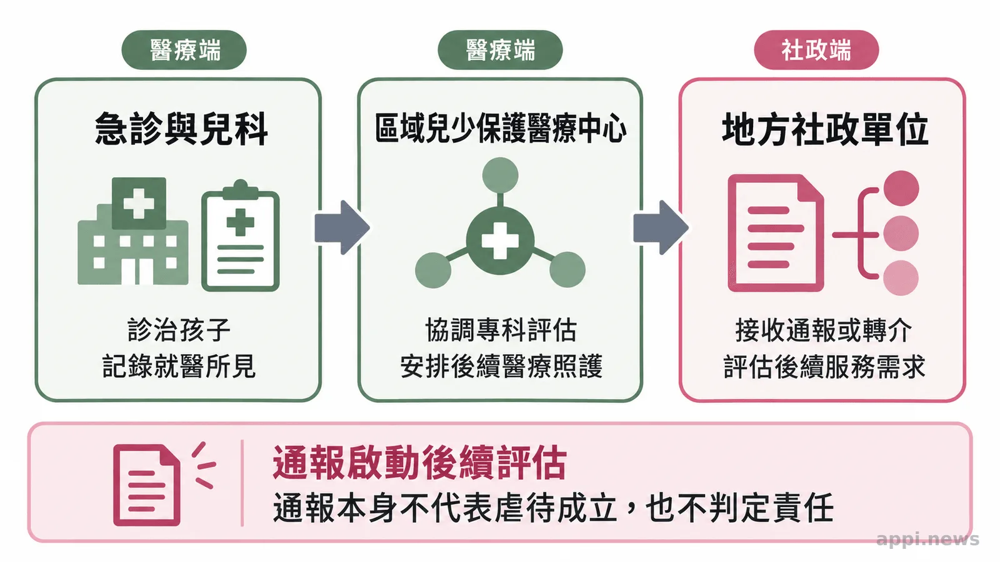
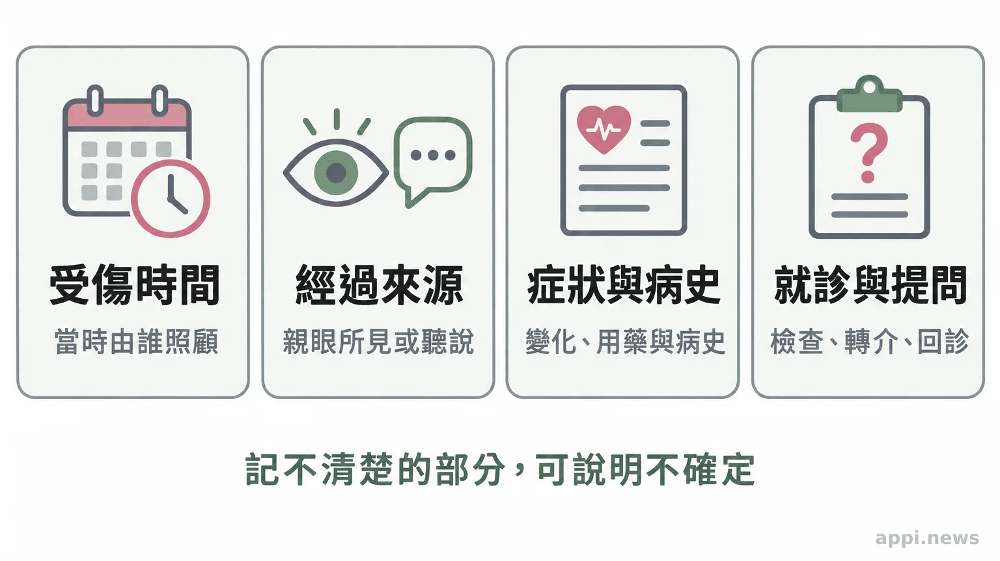

孩子就醫被問受傷經過？認識兒虐辨識與醫療求助
孩子受傷就醫時，急診與兒科如何評估？從驗傷紀錄、兒少保護醫療中心到113通報，整理家長能理解的醫療與社政分工。
帶孩子到急診，醫護詢問受傷時間、經過與照顧情形，家長難免緊張。這是醫療評估的一部分，並不表示家長已被指控。醫療團隊會綜合傷勢、孩子的發展能力、病史、症狀變化與就醫時間，確認孩子需要的醫療及安全支持；單一線索不能證明虐待。
醫護為什麼會反覆詢問受傷經過？
**醫護詢問是為了理解傷勢與孩子狀況，不等於已認定有人施虐。**受傷說明與傷勢不相符、說法隨時間出現差異、受傷原因不符合孩子目前的發展能力，或延遲就醫、反覆因傷就醫，都可能讓團隊多做評估。
照顧者記憶不完整、多人輪流照顧，或症狀逐漸出現，都可能使說明有差異。醫療人員會連同孩子年齡、活動能力、病史與檢查結果判讀，不會只憑一句話或一處瘀傷下結論。
英國國家健康與照護卓越研究院（NICE）的兒少保護指引，將不符合孩子活動能力或受傷情境的傷勢、反覆就醫等列為需要留意的臨床特徵；指引也明確說明，這些特徵用來提高辨識與評估，不是確認或排除虐待的診斷標準。這是英國臨床指引，不能取代台灣法規與本地醫療流程。[1]
急診、兒科與驗傷分別處理什麼？
**急診先處理眼前的醫療需要，兒科或相關專科依狀況檢查；驗傷則記錄與評估傷勢，供後續照護及跨單位評估參考。**單次檢查無法單獨判定傷害如何發生或由誰造成。
若孩子有明顯疼痛、出血、呼吸或意識異常，醫療團隊會先處理急症。之後醫師再了解受傷經過、症狀變化、孩子平時的活動能力與病史，依需要安排檢查或會診。
驗傷紀錄可能包括病史、身體檢查、檢查結果及後續處置。衛福部 114 年度計畫指出，中心的驗傷評估報告可供社政評估、處遇及司法訴訟參考。[2] 家長可詢問檢查目的、結果說明時間及後續安排。
兒少保護醫療中心如何連結社政服務？
**兒少保護區域醫療整合中心串連跨專科評估、驗傷診療、身心治療與追蹤，也和社政單位合作，協助孩子取得連續照護。**案件是否成立，仍須由權責單位依程序評估處理。
依衛福部 114 年度計畫，中心由多專業團隊合作，除了協助傷勢評估與後續追蹤，也能提供醫療諮詢、教育訓練，並參與社政跨網絡討論。衛福部保護服務司公布的 114 年度通訊一覽表列有受補助醫院與聯絡方式；中心名單與服務內容會隨年度調整，查詢時請以主管機關最新公告為準。[2][3]
「作為相關評估、處遇及司法訴訟之參考。」資料來源：衛生福利部《114年度推動兒少保護區域醫療整合中心計畫簡章》[2]
醫療與社政的工作相互銜接，各自有不同職責。醫療院所診治、記錄並依規定通報；地方主管機關接獲通報後，依規定進行分級處理，視需要訪視、調查或連結服務。《兒童及少年福利與權益保障法》第 53 條規定，醫事人員等責任通報人員於執行業務時知悉法定情形，須立即通報，最遲不得超過 24 小時；任何人知悉相關情形，也可以向地方主管機關通報。[4] 通報是啟動保護評估的程序，不代表已經完成調查或認定責任。

家長與身邊的大人可以怎麼做？
**把受傷時間、自己知道的經過、症狀變化與相關病史照實告訴醫療團隊，有助安排評估。**記不清楚的地方可以直接說不確定，並分清楚哪些是親眼所見、哪些是後來聽說。
就醫時可整理受傷時間、當時照顧者、孩子的症狀變化、就醫時間及近期相關就診紀錄。家長也可詢問檢查目的、結果說明時間、轉介可能與後續聯絡窗口。
若家長、教師、志工或鄰里擔心孩子可能遭受不當對待，可撥 113 保護專線諮詢或通報。衛福部資料說明，113 全年 24 小時受理保護諮詢與通報；提供孩子所在位置、目前安全狀況及所知的時間經過，能協助接線人員了解情況。[5] 若孩子或他人正面臨立即人身危險，請先撥 110。一般民眾不必自行查案或判斷誰該負責，先把擔心交給有權責的單位即可。

常見問題
Q1：傷勢和照顧者說法不一致，就代表孩子遭受虐待嗎？
不代表。醫療人員會考量孩子年齡、發展、病史與檢查結果，再判斷是否需要進一步評估。
Q2：驗傷會留下哪些紀錄？
紀錄依評估而定，可能包括病史、檢查發現與處置。家長可詢問紀錄用途及後續照護安排。
Q3：家長陪同就醫時，醫療人員通常會問什麼？
常見問題包括受傷時間、發現經過、症狀變化、孩子平常的活動能力、病史，以及是否曾因相似狀況就醫；問題會依孩子狀況調整。
Q4：一般急診可以轉介兒少保護醫療中心嗎？
可以先詢問急診或院內兒少保護團隊是否需要轉介，以及如何聯絡區域中心。中心服務院所與聯絡方式請查衛福部保護服務司最新公告。
Q5：疑似兒少受虐時，應該打 113 還是 110？
疑似兒少保護案件可撥 113 諮詢或通報；若有人正面臨立即危險，先撥 110。通報時提供目前位置與安全狀況，有助相關單位評估如何協助。
- 傷勢與受傷說明的差異是進一步評估線索，不能單獨證明虐待。
- 驗傷有助記錄傷勢與連結醫療、社政評估；醫療詢問不代表家長已被指控。
- 疑似兒少保護案件可撥 113；有立即危險先撥 110。
台灣微光希望關懷協會理事長 林秀霞
參考資料
- National Institute for Health and Care Excellence (2009, reviewed 2025). Child maltreatment: when to suspect maltreatment in under 18s (CG89). https://www.nice.org.uk/guidance/cg89/chapter/Recommendations
- 衛生福利部（2025）。《114年度推動兒少保護區域醫療整合中心計畫簡章》。https://www.mohw.gov.tw/dl-92035-e03eb371-32c8-42af-aa5c-369d7f4afa24.html
- 衛生福利部保護服務司（2025）。《114年度兒少保護區域醫療整合中心通訊一覽表》。https://dep.mohw.gov.tw/DOPs/cp-1257-82403-105.html
- 《兒童及少年福利與權益保障法》第 53 條。https://www.mohw.gov.tw/dl-95290-d476e7a7-a1df-43e3-ad21-290d7b9378ce.html
- 衛生福利部保護服務司（更新於 2024）。《113 保護專線介紹》。https://dep.mohw.gov.tw/DOPs/cp-1183-6499-105.html
本文同步刊於 appi.news。